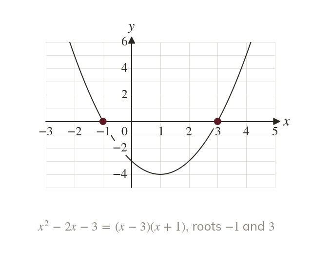
Find the critical values
Solve the equation to find where the graph meets the x-axis. These roots are the critical values.
A quadratic inequality is solved by finding where its graph is above or below the x-axis, so the answer is one interval or two pieces. The same method finds the range of values of for which a quadratic has real roots, and combines with last lesson's linear inequalities.
Work down the page at your own pace. Write every answer in your book first, then click to check it.
Read each card, then follow the worked examples one step at a time.

Solve the equation to find where the graph meets the x-axis. These roots are the critical values.
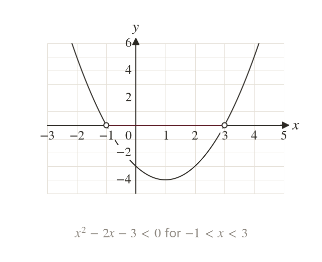
The expression is negative where the curve is below the x-axis. That is between the roots, so
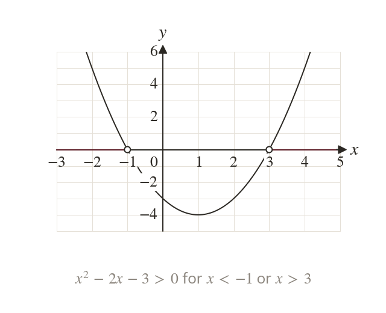
The expression is positive where the curve is above the x-axis. That is two pieces, {x : ∪ {x :
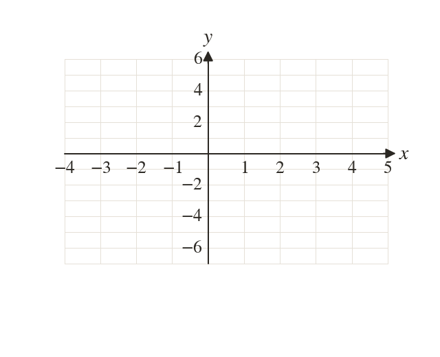
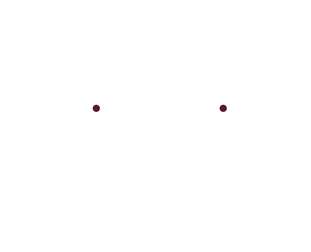
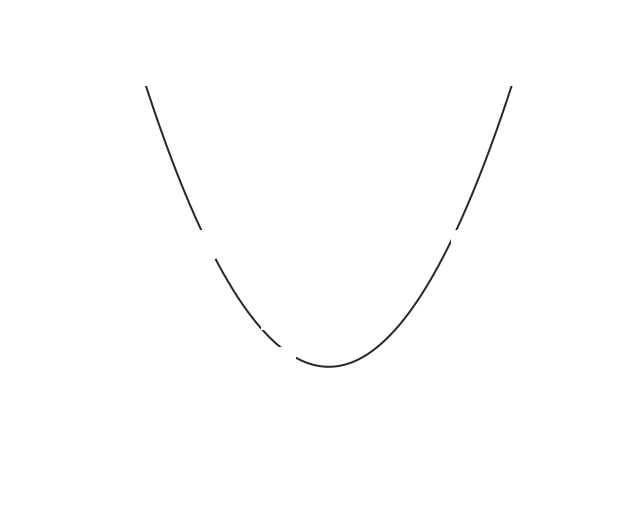
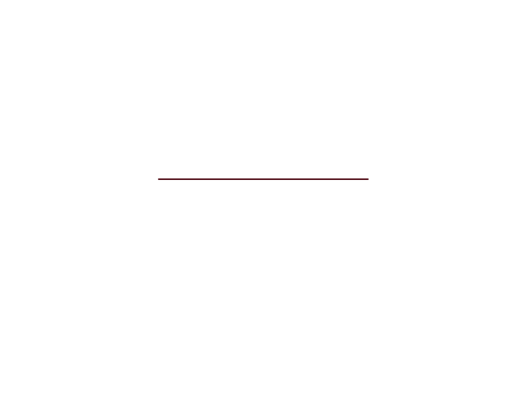
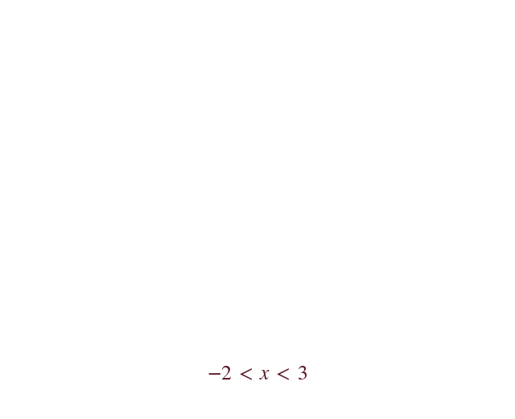
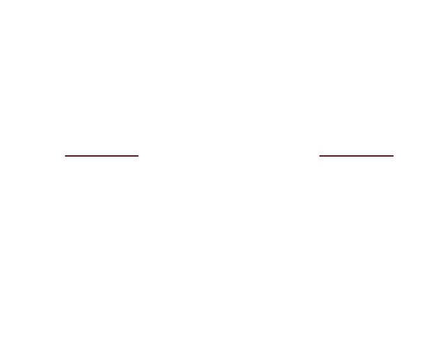
Pick an answer. If it's wrong, the feedback tells you which mistake it was.
Write the blanks in your book first, then tap each one to check.
Read each card, then follow the worked examples one step at a time.
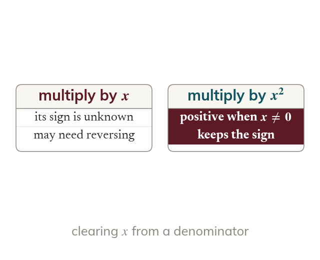
The sign of is not known, and a negative would reverse the inequality. Multiplying by is safe, as for every
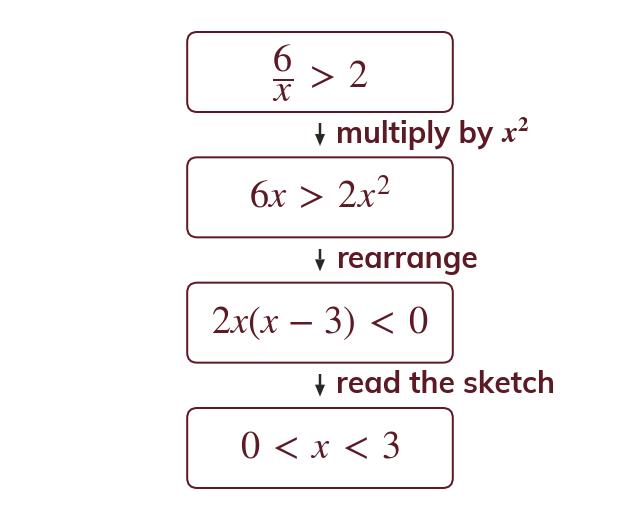
Multiplying by gives so
The curve is below the axis between its roots, so
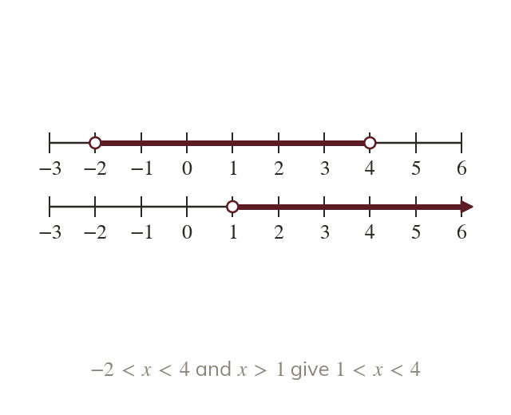
Solve each inequality on its own and draw both above one scale. The answer is where they overlap.
Pick an answer. If it's wrong, the feedback tells you which mistake it was.
Write the blanks in your book first, then tap each one to check.
Finished? Next lesson: 3.6 Inequalities on Graphs.
For each skill, tap the one that is true for you today. Your Revise pages start with anything you mark Not yet.
Your ratings are saved on this device only.
Log in, then search for a code to practise that skill.